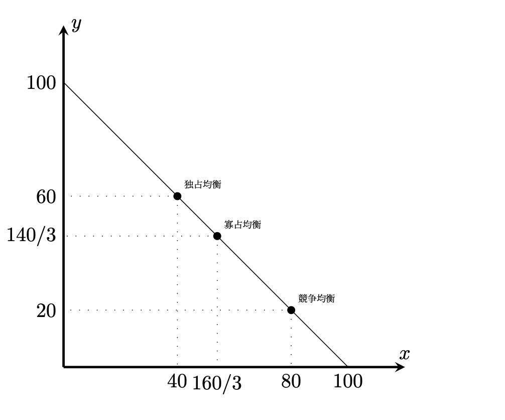

経済学で出る数学
ワークブックでじっくり攻める：応用問題
独占均衡・寡占均衡・競争均衡
【問】 ある市場の逆需要関数が
\[
P(Q)=100-Q
\]
であるとしよう．
また費用関数が
\[
C(Q)=20Q
\]
であるとする．すなわち企業は$1$単位当たり$20$の費用で生産できる．
(1) $1$社だけが独占で操業しているとき，企業にとって最適な生産量$Q^{M}$，
その下での価格$P^{M}$，利潤${\pi}^{M}$ ，消費者余剰$CS^{M}$，総余剰$TS^{M}$を求めなさい．
(2) $2$社が寡占で数量競争をし操業しているとき（クールノー競争），企業にとって最適な生産量$q_1^{C}, q_2^{C}$，その下での価格$P^{C}$，利潤${\pi}_1^{C}, {\pi}_2^{C}$ ，消費者余剰$CS^{C}$，総余剰$TS^{C}$を求めなさい．
(3) 競争均衡を求め，独占均衡における死荷重を求めなさい．
【解答】
(1) 独占企業の生産量が$Q$のとき，利潤は
\[
{\pi}(Q)=P(Q)Q-C(Q)=(100-Q)Q-20Q=(80-Q)Q
\]
横軸切片が$0, 80$なので，$Q^{M}=40$で最大値となる．
そのときの価格は，$P^{M}=100-40=60$．
利潤は${\pi}^{M}=(80-40)\times 40=1600$．
消費者余剰は，底辺と高さがともに$40$の直角三角形の面積なので（下図参照），
$CS^{M}=40 \times 40 \times \dfrac{1}{2}=800$．
総余剰は$TS^{M}=1600+800=2400$．
(2) 企業$1$の生産量が$q_1$，企業$2$の生産量が$q_2$のとき，企業$1$の利潤は
\[
{\pi}_1(q_1,q_2)=P(q_1+q_2)q_1-C(q_1)=((80-q_2)-q_1)q_1
\]
横軸切片が$0, 80-q_2$なので，企業$1$の最適生産量は（最適反応関数）
$q_1^{C}=\dfrac{80-q_2}{2}$となる．
同様に企業$2$の最適生産量は（最適反応関数）
$q_2^{C}=\dfrac{80-q_1}{2}$となる．
連立方程式
\begin{align*}
q_1=\dfrac{80-q_2}{2}\\
q_2=\dfrac{80-q_1}{2}\\
\end{align*}
を解いて，$(q_1^C,q_2^C)=(80/3,80/3)$となる．
そのときの価格は，$P^{C}=100-(80/3+80/3)=140/3$．
利潤は${\pi}_1^{C}={\pi}_2^{C}=(80-160/3)\times \dfrac{80}{3}=\dfrac{6400}{9}$．
消費者余剰は，底辺と高さがともに$160/3$の直角三角形の面積なので（下図参照），
$CS^{C}=\dfrac{160}{3}\times \dfrac{160}{3} \times \dfrac{1}{2}=\dfrac{12800}{9}$．
総余剰は$TS^{C}=2\times \dfrac{6400}{9}+\dfrac{6400}{9}=\dfrac{25600}{9}$．
(3) 競争市場では価格は，$1$単位当たりの費用$20$になる．
従って企業の利潤は$0$，
消費者余剰は，底辺と高さがともに$80$の直角三角形の面積なので（下図参照），
$CS=80 \times 80 \times \dfrac{1}{2}=3200$．
総余剰は$TS=3200$なので，独占の死荷重は$3200-2400=800$となる

【解答終】
【Further Reading】
西村淳一・山内勇『産業組織論への招待』新世社（2025））
�
ふろく（２）応用問題 一覧へ